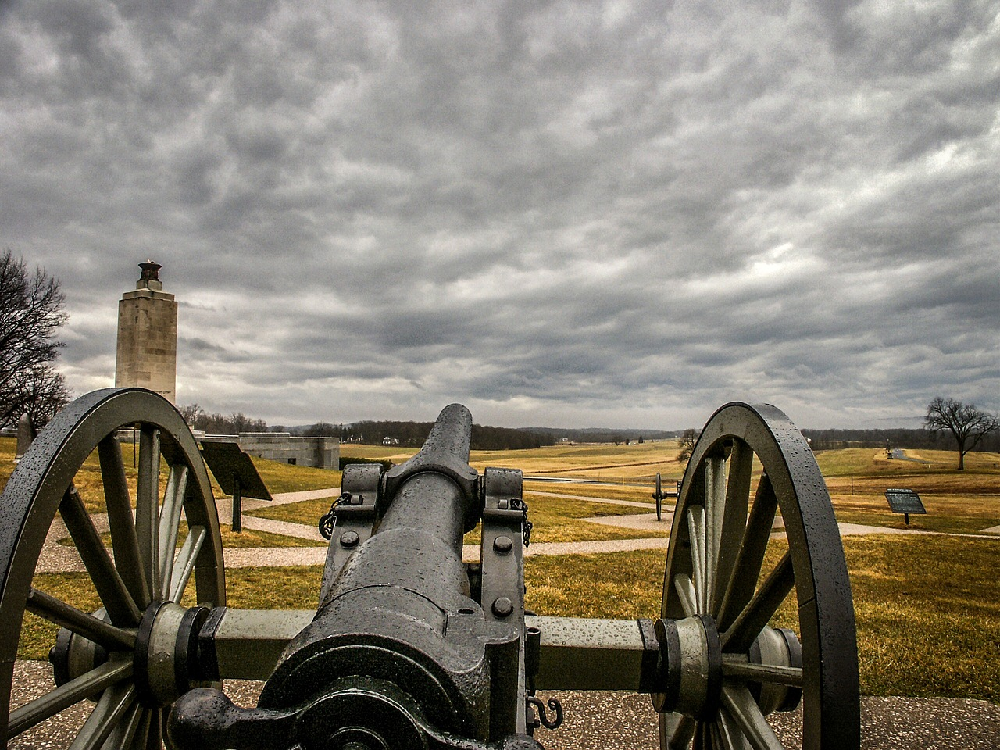
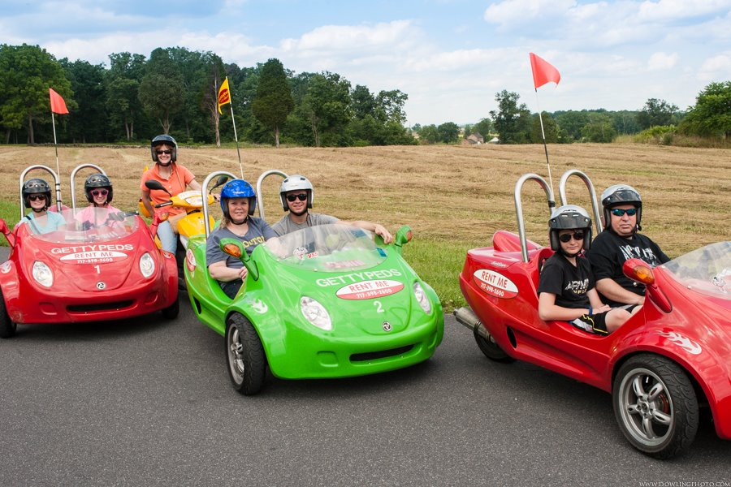

A cool, historic place you may want to consider visiting is Gettysburg! There are so many things you can do, like visiting the battlefields, taking horseback or pedicar tours, and learning about the history of each and every battle fought during the Gettysburg Civil War. You can also take Ghost tours at night, where a tour guide will show you where most of the hauntings and where people died are. A great way to stay is to camp, since some campsites are right on one of the battlefields! You can go to town to shop for souvenirs, eat out, or get some refreshments. Some battlefields you can go to are McPherson’s Ridge, Seminary Ridge , and Oak Ridge (Day 1 of fighting), Little Round Top, Devil’s Den, and the Peach Orchard (Day 2 of fighting). All of these places have plaques that explain what happened, and you can take a walk and hike in these spots. A fun way to take a tour around the town of Gettysburg is riding a horse or renting pedi cars. The pedi-car instructor gives you a fun driving lesson and tells you about the different battle locations to visit. The pedi car is a cool experience because it's a mini car that can drive pretty fast and take you anywhere you want. After you’re done using it, return it at the end of the day. A fun and spooky experience is taking a ghost tour! If you like ghost stories and visiting cemeteries, this is for you. The tour takes you all over the town of Gettysburg and tells you the background of some soldiers' stories and about some families. They take you to some cool battlefields at night, and when you take a picture, sometimes you see a singular orb. Rumor has it that the orb is one of the people who died there, and that their soul is stuck in the town of Gettysburg. If you want the full thrill of Gettysburg, I would recommend staying overnight and camping in the campgrounds, since the camp is on one of the battlefields! You can enjoy yummy s'mores while talking by the campfire, take a walk around the campground, or go to the camp store and get some snacks or entertainment. Lastly, we have the town itself. There are so many different places to eat, shop, and hear live music. The town is always lively, and something is always going on. A fun thing to do while in Gettysburg is to go see the reenactments. People dress up, reenact battles, use some horses, guns, and cannons, add sound effects to make it feel more real, and tell the story of what it was really like back in the Civil War.